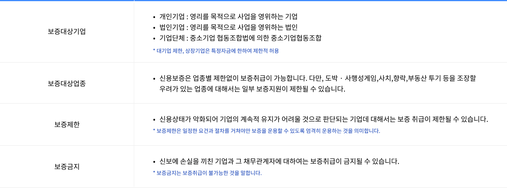

신용보증기금
신용보증기금은 신용보증을 통하여 중소기업의 금융을 원활히 하고 신용정보의 효율적인 관리 운용을 통하여 건전한 신용질서를 확림함으로써 균형있는 국민경제의 발전에 선도적인 역할을 수행하고 있는 세계 최고 수준의 중소기업 종합지원기관입니다.
보증절차

- STEP 01 보증신청 및 상담
-
- 신보 홈페이지 내 신용보증 플랫폼 또는 모바일 앱을 통해 보증상담 신청
- 신규기업은 영업점 방문상담, 기존 보증거래기업은 전화상담 가능(방문상담 생략)
- STEP 02 자료수집 및 신용조사
-
- 신용조사 및 보증심사에 필요한 자료를 수집
- 신보 홈페이지 내 신용보증 플랫폼 또는 모바일 앱을 통해 자료제출 가능
- 수집된 자료 및 담당자 현장출장 등을 통해 신용조사
- STEP 03 보증심사 및 승인
-
- 신용평가 실시 및 신용등급 산출
- 각종 검토표 충족여부 검토
- 보증지원 가능 여부 및 보증금액 검토
- 보증승인(영업점 또는 본부)
- STEP 04 보증서 발급
-
≈신용평가 실시 및 신용등급 산출신용평가 실시 및 신용등급 산출 ≈각종 검토표 충족여부 검토각종 검토표 충족여부 검토 ≈보증지원 가능 여부 및 보증금액 검토보증지원 가능 여부 및 보증금액 검토 ≈보증승인(영업점 또는 본부)보증승인(영업점 또는 본부)
보증대상
신용보증기금은 균형있는 국민경제 발전에 기여하고 국가경제의 경쟁력 강화를 위하여 일정한 자격을 갖춘 기업에 대하여 보증지원을 하고 있습니다.

신용보증 종류
신용보증기금은 균형있는 국민경제 발전에 기여하고 국가경제의 경쟁력 강화를 위하여 일정한 자격을 갖춘 기업에 대하여 보증지원을 하고 있습니다.
-
대출 보증
- 기업이 은행으로부터 각종 운전 및 시설자금을 대출 받는데 따른 금전채무를 보증
- 일반운전자금, 무역금융, 구매자금융, Network Loan, 할인어음, 설비자금, 기업행복카드보증, 각종 기술개발자금 등
-
제2금융보증
- 기업이 제2금융회사로부터 대출받는데 따른 보증
- 농업협동조합, 수산업협동조합, 한국농수산식품유통공사, 중소벤처기업진흥공단, 종합금융회사, 보험회사, 중소기업창업투자회사, 상호저축은행 등
-
어음보증
- 기업이 상거래의 담보 목적 또는 대금결제수단으로 주고 받는 어음에 대하여 지급을 보증
- 지급어음, 받을어음 및 담보어음에 대한 보증
-
이행보증
- 기업이 건설공사, 물품납품, 용역제공 등을 위하여 입찰참가 또는 계약체결 등을 할때 담보로 이용되는 보증
- 입찰보증금, 계약보증금, 차액보증금, 지급보증금, 하자보수보증금
- 보증상대기관 : 정부, 지자체, 공공기관, 금융회사 또는 이러한 기관들과 계약을 체결한 원사업자, 사회기반시설에 대한 민간투자법에 의한 사업시행자 등 금융위원회가 정하는 자
-
지금보증의 보증
- 기업이 금융회사로부터 지급보증을 받을 때 그 보증채무의 이행으로 인한 구상에 응하여야 할 금전채무에 대한 보증
- 신용장 개설에 대한 지급보증 등
-
납세보증
- 기업이 국세 및 지방세 납세의무와 관련하여 세무서, 지방자치단체에 세금을 분할납부, 징수유예를 받고자 할 때 담보로 이용되는 보증
-
(전자)상거래담보보증
- 중소기업이 (전자)상거래계약과 관련하여 부담하는 대금지급채무에 대한 보증